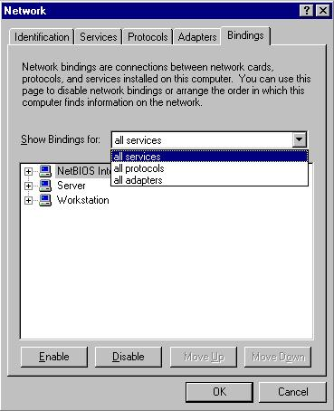
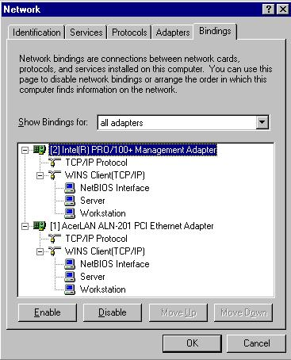
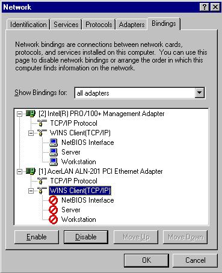

By Kurt Seifried, [email protected]
Windows NT was Microsoft's first attempt at an industrial strength business oriented operating system, and by the time NT 4.0 rolled around they had done quite a good job. NT supports advanced file permissions in the form of Access Control Lists, users and groups, and other needed security features. The problem is however that in an effort to make NT usable the default permissions on files are registry entries are extremely permissive (everybody has full control).
Your best defenses in Windows NT are:
Unfortunately there are not many services you can disable if you are using it for file and print sharing and authentication. Fortunately most of these machines are on LANs and access from the Internet is restricted, so chances are if someone attacks it it will be from an internal source. This is why keeping the software up to date is so critical. However for publicly accessible machines such as web servers you should not rely on Windows file sharing, unless you have some sort of VPN and firewall to protect it. Also for gateway servers, proxy servers and other machine with connections to public and internal networks you can easily disable file and print sharing on the external adapter only, leaving it enable don the internal one. Although Windows NT does have built in packet filtering, it does not work properly and I would not recommend using it.
First open up network settings, "Start", "Settings", "Network", and choose the "Bindings" tab:

Choose "Show Bindings for" and select "all adapters", then expand the tree view:

Assuming the Interl 10/100 card is your internal interface, and the Acer PCI card is your external interface you would want to disable the WINS Client on it, to be on the safe side you should disable all the services, simply highlight them and click "Disable":

You can now click on "OK" and then you will have to reboot the computer.
The Server service is the actuall file and printer sharing. The Workstation service allows you to connect to other servers, this is dangerous because it potentially allows a remote attacker to connect to a remote site and retrieve data (such as a trojan horse they want to load on your machine), and in some cases passwords can be found be having the target computer connect out and try to access resources on an attackers machine.
There are two sets of fixes for NT and related products, the first are hotfixes, these are solutions to (usually) individual problems, released several days or weeks after the problem is found. These hotfixes are tested, however they are not completely regression tested, so on occasion they may break some feature or misbehave. Every once in a while all the current fixes are rolled up into one big package, called a service pack. These service packs are extensively tested and include hundreds of fixes (calc.exe is replaced for example), they rarely break things (but it has been known to happen). The following URL's have links to download the various fixes needed for NT:
http://www.microsoft.com/NTServer/all/downloads.asp
http://v4.windowsupdate.microsoft.com/en/default.asp
This is probably the first thing you should do after installing an NT server, you will need to apply the latest service pack, and numerous hotfixes, which can take a while since you MUST reboot in between them (do not try to install multiple hotfixes without rebooting, you will likely damage your software installation).
Although NT supports file ACL's (Access Control Lists) the default permissions are that the group everybody has "full control", meaning anyone that can log in locally, or access files via a fileshare can create, delete, modify or otherwise manipulate files and directories. This is especially critical on machines that are part of a domain since backups of the SAM (Security Account Manager) are stored in:
C:\Winnt\repair\sam._
Or wherever your NT installation directory is. Once an attacker has this file they can run it through a password cracking program such as L0phtcrack, since NT uses less then optimal password storage techniques, combined with the speed of password cracking programs it is pretty much guaranteed that an attacker will glean some passwords. The repair directory should be protected, open up "Windows NT Explorer" and go into your NT installation directory, then right click on the "repair" directory, choose "Security" and remove the group "everyone" from the listing. This is just one example of literally hundreds of bad file permissions.
Unfortunately if you try to protect the C:\Winnt\System and C:\Winnt\System32 chances are you will break many common applications since they want to be able to access files in these directories and in some cases write to them. A partial solution is to use system policies and restrict the applications people can run, i.e. restrict a user to:
C:\Program Files\Officesuite\office.exe C:\Winnt\Notepad.exe
There is also a product from SecureWave called SecureExe who's primary purpose is to prevent trojan software from being executed, but can also prevent users from say copying regedt32.exe over notepad.exe and running is (since it not only check the file name, but a cryptographically secure hash of it [SHA1]). These two topics are discussed in more depth later on.
The same problem that affects file security exists for registry permissions, they default is extremely promiscuous. NT ships with two registry editing programs, one has the ability to manipulate security permissions and is extremely functional (regedt32.exe), the other has a search function, but you cannot modify permissions and so on (regedit.exe), which makes securing the registry a very tedious process.
Using regedt32.exe simply open up the registry on the appropriate computer (the default is the local computer), find the key or keys you wish to secure and choose "Security" and then "Permissions" and you can easily modify who is able to manipulate the key.
A freeware/commercial solution is RegDACL from Heysoft, the freeware version is slightly stripped down but still very functional. You can easily script modifications and it makes modifying registry security permissions much faster (since chances are you want to do the same thing on many computers). You can download it from:
http://www.heysoft.de/index.htm
Even with all these precautions it is still possible for a virus to slip in and do something malicious. Best case scenario it infects some data which you need only disinfect or restore from backup, worst case it replicates itself via email and takes out your entire network. As well many trojan programs for NT are detected by the majority of anti-virus scanners, they are an integral part of any security policy.
http://www.antivirus.com/ - TrendMicro (PC-cillin)
http://www.norton.com/ - Norton (Anti-Virus)
http://www.mcafee.com/ - McAfee (Virus Clinic)
If your machine is attached directly to the Internet you should definetely install a firewall product, if it is on an internal network it is also a good idea (since many attacks come from internal sources).
http://www.networkice.com/html/small_home_office.html - Network ICE (BlackICE Defender, about $40USD for single license)
The Windows NT event logger is extremely useful for detecting suspicious activity and nefarious user actions. Like most Windows NT security features it is not turned on by default. The first step is to increase the log size, as the default is to only keep 512 kilobytes of logs and overwrite events older then 7 days old. I would reccomend setting the log size to several hundred megabytes, or gigabytes if you want to do extensive logging (disk space is cheap). Setting the log file to "Overwrite Events as Needed" will result in the log "wrapping", as space is needed the oldest event will be blown away, this is somewhat better then "Do Not Overwrite Events (Clear Log Manually)" which once full will stop recording logging events. However the danger in overwriting log events is that an attacker may try to cover their tracks by flooding the log files and overwriting the events that could help reconstruct what happened. In any event a tool is now available: "WinZapper" which can be used to delete log entries.
http://ntsecurity.nu/toolbox/winzapper/ - WinZapper
The good news however is that WinZapper cannot be used remotely, so the user must install a trojan such as BackOrifice 2000 to use it (unless of course someone modifies WinZapper for remote usage, which is far from impossible). You can also not run Event Viewer after using WinZapper, you must reboot, so two indications that WinZapper has been used would be if the server is unexpectedly rebooted or if you cannot run Event Viewer. As well a file called "dummy.dat" is left, this is a copy of the original log file, so without modifications the tool is easily detected (again, this modification will happen, so don't depend on being able to find a dummy.dat file). It is primarily a proof of concept that once administrative access is gained you can no longer trust the event logs (this is true of most operating systems unless you use some type of secure off system logging).
To enable logging you must first go to "Start", "Programs", "Administrative Tools (Common)", and select "User Manage for Domains". Then click on "Policies" and choose "Audit". You can selectively audit events like user logins/logoffs, file and object access (warning, this will generate a lot of log entries), user and group management and so on. You can also audit successes and/or failures, unless you are extremely concerned about security auditing failed events only is probably sufficient. However for some sensitive environments you may wish to know exactly when users are accessing certain files. Once you have enabled auditing on "File and bject Access" you will need to enable auditing in the filesystem, this is good news because you can extremely selective on which files and directories you audit (otherwise there would be a huge amount of "noise" for normal system activity). Open up the "Windows NT Explorer" and select the directory or files you wish to enable auditing on, then right click, choose "Security" and "Auditing". You can audit access by certain users and groups (for example accounts belonging to temp workers might be included in the audit, but not fulltime workers), and you can audit the events selectively (Read, Write, Execute, Delete, Change Permission and Take Ownership) and whether they succeed or fail. Use the "Everone" group if you wish to record anyone accessing files.
One problem with all of this is that you can enable/disable logging on the fly without requiring a reboot, while convinient it does allow an attacker to disable auditing before they attempt to access something, and they can then turn the auditing back on, or leave it disabled (chances are most administrators will not notice). You should periodically check to make sure auditing is enabled properly, or have a test account to access objects so you can verify that the access is logged.
System policies will be covered later as they are a reasonably complex topic.
Even with System policies installed and enforced it is possible for an attacker to circumvent them. Let's say for example you have restricted the programs a user can run, even with the full patchname specified it is possible for someone to run arbitrary programs if they can overwrite one of the programs they have access to. For example if you let UserA run C:\Winnt\notepad.exe, and you have not tightened up permissions they can simply copy regedt32.exe overtop of it and run it.
One solution is to use SecureExe from SecureWave:
http://www.securewave.com/html/secure_exe.html
This program uses the SHA1 signature algorithm, in addition to the program's name/path, if the stored signature for calc.exe doesn't match the one in the database you cannot run calc.exe. An attacker can copy over a file, but the signature will not match, and it will not be run. No pricing or availability yet, however they do have an online demo using Microsoft's Terminal Server.
For a variety of reasons it is desirable to restrict user access to removable devices such as floppy disks, cdrom drives, printer ports and communication ports. Unfortunately NT does not have any facilities to control access to these ports selectively. Disabling them in the BIOS is possible but then you must reboot and enter a password at the BIOS prompt to reenable them, not a workable solution by any means. The good news is that there is a nice commercial product from SecureWave, called SecureNT (it also supports Win9x). This loads a VXD at startup which controls access to any removable media, and the com and printer ports. This allows you to easily prevent the user from plugging a modem in and setting up dial-in access, or plugging a parallel port cd-burner in and stealing corporate data.
http://www.securewave.com/html/secure_nt.html
Manually checking to make sure no-one has breached your security and reveiwing log files is an extremely time intensive and tedious process. Luckily there exist many software packages that will do it for you, filter the results and alert you to suspicious activity.
http://www.ntobjectives.com/ - Activity log scanners
http://www.bluelance.com/ltauditor/default.html - Intrusion detection / audit trail
http://www.cerberus-infosec.co.uk/cis.shtml
Most of the built in Windows NT tools (like User Manager for Domains) leave a lot to be desired and are usually unusable in extremely large and complex environments.
http://bindview.com/products/bv-Control/Windows2000/index.html
Last updated 10/4/2002
Copyright Kurt Seifried 2001